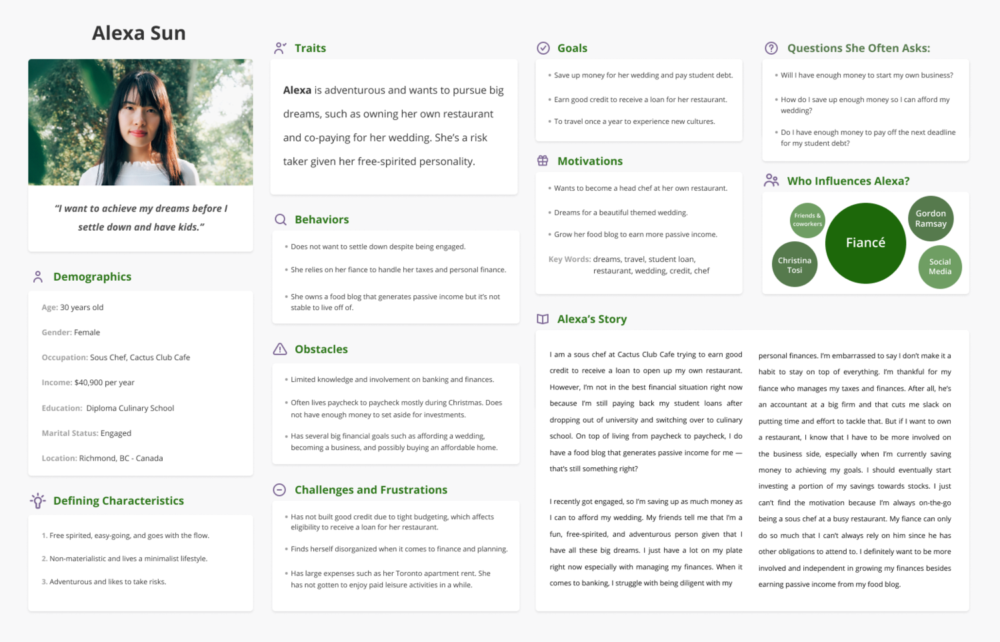
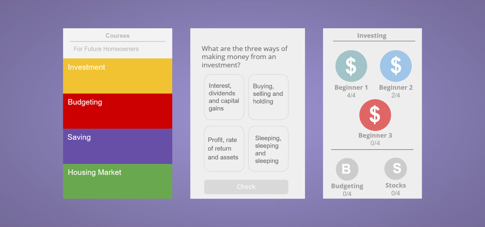
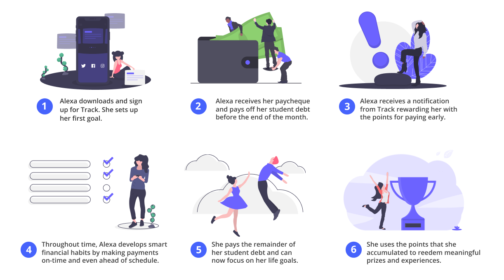
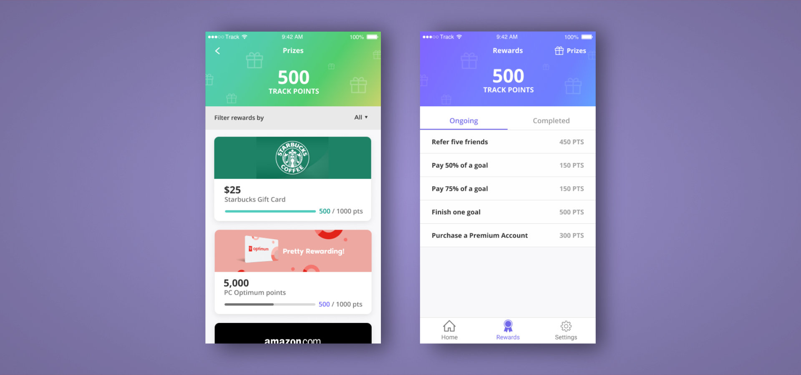

TRACK
Year. 2019
Range of Work. UX Design
Software. Adobe Illustrator, Figma, InVision
Description & My Role.
I worked with a team of five and created a financial goal-setting solution that
teaches and encourages young Canadians to be financially independent.
I contributed as a User Experience Designer & Researcher for this project.
I also conducted user research to understand the target demographic & designed
high fidelity mock-ups and the prototype with team members.
1.Empathy
Problem
“As young people are becoming priced out of the housing and investment market, how might the bank provide new digital solutions for young Canadians to thrive in today’s challenging economy?”
In Canada’s current economy, young adults are constantly facing financial obstacles and challenges due to the high prices of housing and investments. Our group wants to help them to become better off and work towards their financial goals. With the problem that Scotiabank gave us, we conducted the initial research to learn about the common struggles Young Canadians have with their finances.
And we discovered these following facts:
User Research
To further our exploration of the problem, we conducted the user interviews to get in-depth
knowledge and understanding of our target user group. We spoke with young adults, ranging
from 20 to 25 years old, to get their personal insights on the current financing and investing
behaviors, habits, and goals.
We discovered that many of them have aspirations like buying a house and owning their own place,
but before they can do any of that, they need to pay their student debt first. We also found that
they struggle with prioritizing their time & effort towards their finances. They understand that
it’s important to make payments ASAP but often forget about them due to last minute due to their
busy lives.
2. Define
Problem Statement
“As a 22 to 30-year-old, I want to overcome my financial obstacles in order to achieve my life goals.”
Using the information collected from the researches and user interviews, we put together the
affinity diagram, allowing us to visualize and discover the commonalities of our users’
experiences, opinions, ideas, struggles, and perspectives towards their investments and
financial goals.
It helped us to narrow down a problem statement that would guide our works and to start
the ideation process in the right direction as well as bringing the clarity and focus to
the design space.
User Persona (Say Hi to Alexa)
We based our users off our findings from our online research and user interviews in order to capture our target user base. Alexa Sun is a 30 years old, working as a sous chef at Catus Club Cafe. She wants to achieve her goals before settling down and having kids, however, because of OSAP, she would not be able to achieve it.
3. Ideate
Our group came up with different concepts to tackle the problem. One of our early concepts were an education platform that would teach financial education, however, this idea was questionable for our target demographic. We discovered that the learning content through quizzes and articles weren’t digestible. They simply does not have enough time for this learning content. In the later iteration process, our group decided to steer away from the trivial features, and focus on the aspects of tracking their debts and loans.
4. Prototype and Test
We validated the concept of tracking their track debts and loans at our usability testing session with five participants using our first rough mock-up. Our group discovered that the participants...

5. Solution
Our group finally able to find the solution after the long journey of finding a way to help young Canadians to thrive in today’s challenging economy. Our design solution is an ecosystem consists of a goal-setting product that encourages young Canadian by incentivizing their actions in order to help them to be more confident about their financial future as well as to develop healthy financial habits.
Our business provides a platform that allows people to monitor the progress of their financial goals. In addition, customers will be rewarded points for achievements and they can redeem them with popular Canadian loyalty programs. It would help young adults to develop healthy habits of making payment on-time or even earlier. It would also help them to build a good credit score in the future that would help them to get a mortgage to buy their new house and car. Through our partnerships with other businesses, such as loyalty programs, we can use their resources to incentivise young Canadians to make their payments on time, or even early.
Adding Goals
Alexa goes through a five-step process: 1. Choose debt as her type of goal 2. Select the type of account from her bank 3. Select her loan payee 4.Provide deadline information 5. Personalize her monthly contribution

Tracking Goals
Alexa views her student debt progress and interacts with it to learn more information about it. This page shows a goal chart that outlines her monthly contributions and remaining balance.
Challenges & Prizes
Alexa takes on opportunities to earn more points in order to redeem meaningful prizes. This is the solution’s gamification aspect for Alexa to continuously use the mobile application. Along the way, she can use her accumulated points to redeem rewards that would make her happy.
